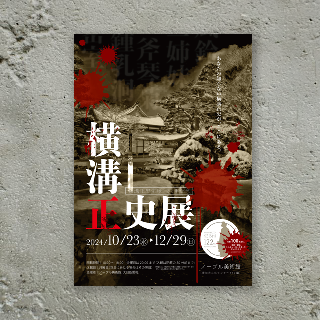
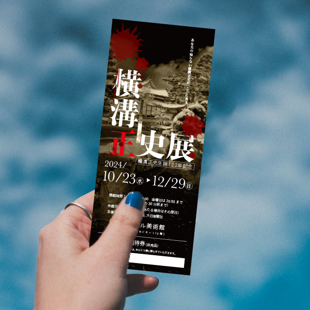
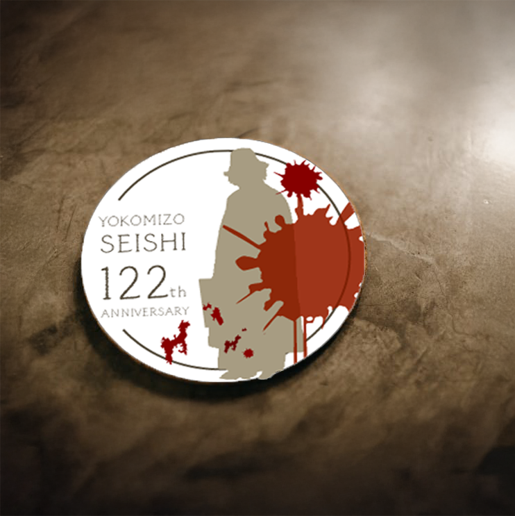

美術館の
企画展チラシ＆
関連グッズ
企画展チラシ＆
関連グッズ

学生のグラフィック課題の課題見本として制作しました。自分が好きなものを設定し、美術館の企画展という想定で制作します。 ミステリー小説家の横溝正史展という企画展を考え、チラシ及び関連グッズのデザインをしました。

| ターゲット | 専門学校2年生のグラフィック課題 |
|---|---|
| 目的 | 4月からPhotoshopを勉強してきた学生に向けての課題見本。 Photoshopならではの、現実ではあり得ない世界を作り上げる。 |
| デザインプロセス | 自分が作りたいことのテーマを決め、それに合わせた素材探しをする。 収集した素材を使って、加工及び合成をする。ただ合成するだけでなく、素材と素材が馴染む努力をする。 |
| 制作時間 | 2週間 |
| 制作ツール | Illustrator/Photoshop |